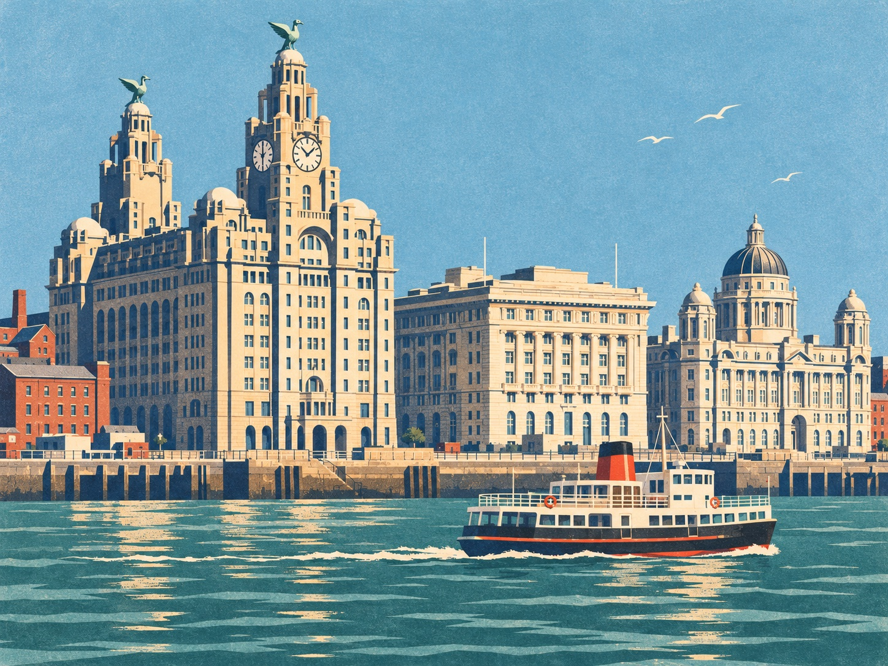

River Mersey
The conference
The University of Liverpool welcomes the combinatorics community for five days in July 2028.
Held every two years, the British Combinatorial Conference brings together researchers and students from across the field. We’ll share the programme, speakers and registration details here as they are confirmed.
Read the committee announcementVisiting Liverpool
The University’s city-centre campus is about a ten-minute walk from Liverpool Lime Street station. Use the University’s travel guide to plan your arrival by rail, road or air.
Local organisers
- Gabriel Berzunza Ojeda
- Linglong Yuan
- John Sylvester
- Viktor Zamaraev